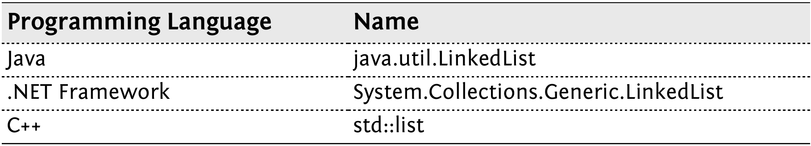
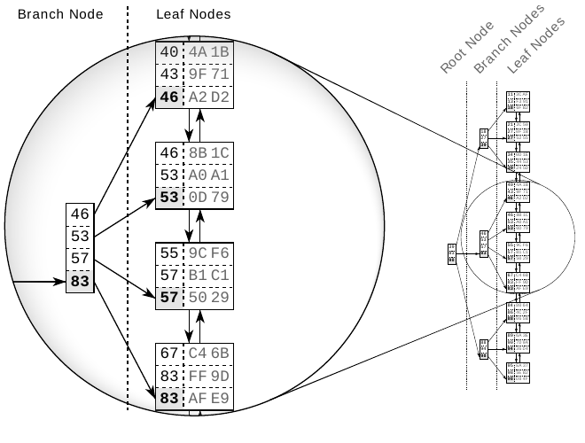
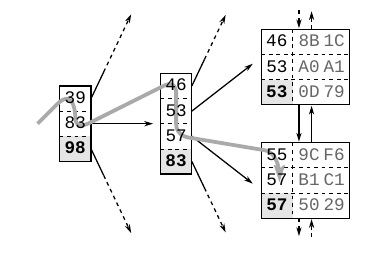
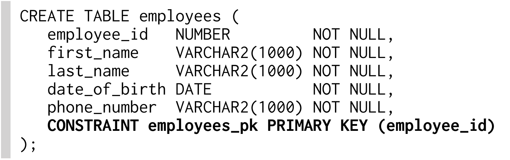
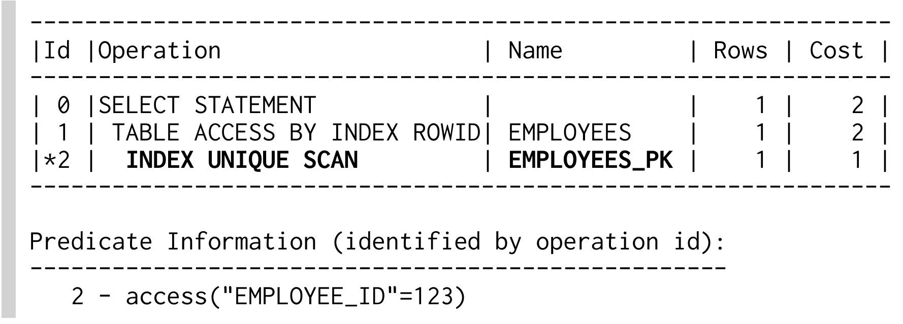

Ebook này chỉ được cấp phép để bạn sử dụng cá nhân. Ebook này không được bán lại hoặc tặng cho người khác. Nếu muốn chia sẻ sách với người khác, vui lòng mua thêm một bản cho mỗi người. Nếu bạn đang đọc sách này nhưng không mua, hoặc sách không được mua chỉ để bạn sử dụng, vui lòng truy cập http://SQL-Performance-Explained.com/ và mua bản riêng của mình. Cảm ơn bạn đã tôn trọng công sức của tác giả.
Bản sao này được cấp phép cho:
GHEORGHE GABRIEL SICHIM <gabriel.sichim@gmail.com>
Nhà xuất bản:
Markus Winand
Maderspergerstasse 1-3/9/11
1160 Wien
AUSTRIA
<office@winand.at>
Bản quyền © 2012 Markus Winand
Bảo lưu mọi quyền. Không phần nào của ấn phẩm này được sao chép, lưu trữ hoặc truyền đi dưới bất kỳ hình thức hay phương tiện nào — điện tử, cơ học, sao chụp, ghi âm hoặc cách khác — nếu chưa có sự đồng ý trước của nhà xuất bản.
Nhiều tên được nhà sản xuất và người bán sử dụng để phân biệt sản phẩm của họ là nhãn hiệu đã đăng ký. Khi các tên gọi đó xuất hiện trong sách này và chúng tôi biết có yêu cầu về nhãn hiệu, chúng được in bằng toàn chữ hoa hoặc chữ cái đầu viết hoa.
Dù đã thực hiện mọi biện pháp cẩn trọng khi chuẩn bị cuốn sách này, nhà xuất bản và tác giả không chịu trách nhiệm về lỗi, thiếu sót hoặc thiệt hại phát sinh từ việc sử dụng thông tin trong sách. Cuốn sách chỉ phản ánh quan điểm của tác giả. Các nhà cung cấp database được đề cập không hỗ trợ tài chính cho công trình này và cũng không xác minh nội dung.
DGS - Druck- u. Graphikservice GmbH — Wien — Austria
Thiết kế bìa:
tomasio.design — Mag. Thomas Weninger — Wien — Austria
Ảnh bìa:
Brian Arnold — Turriff — UK
Biên tập viên:
Nathan Ingvalson — Graz — Austria
2014-08-26
Các vấn đề SQL performance đã tồn tại từ khi SQL xuất hiện, thậm chí có người cho rằng SQL vốn dĩ chậm. Điều này có thể đúng vào thời kỳ đầu của SQL, nhưng hiện nay chắc chắn không còn đúng. Tuy vậy, vấn đề SQL performance vẫn rất phổ biến. Tại sao lại như vậy?
Ngôn ngữ SQL có lẽ là ngôn ngữ lập trình thế hệ thứ tư (4GL) thành công nhất. Lợi ích chính của nó là khả năng tách biệt “what” và “how”. Một câu lệnh SQL mô tả trực tiếp điều cần có mà không chỉ dẫn cách thực hiện. Hãy xem ví dụ sau:
SQL query này đọc như một câu tiếng Anh giải thích dữ liệu được yêu cầu. Việc viết câu lệnh SQL nói chung không đòi hỏi kiến thức về cách database hoặc storage system vận hành bên trong (như disk, file, v.v.). Không cần chỉ cho database biết phải mở file nào hay tìm các row được yêu cầu ra sao. Nhiều developer có nhiều năm kinh nghiệm SQL nhưng biết rất ít về quá trình xử lý diễn ra trong database.
Việc tách biệt mối quan tâm — cần gì so với cách lấy được nó — hoạt động rất tốt trong SQL, nhưng vẫn chưa hoàn hảo. Sự trừu tượng hóa chạm giới hạn khi xét đến performance: theo định nghĩa, tác giả của một câu lệnh SQL không quan tâm database thực thi câu lệnh như thế nào. Do đó, tác giả không chịu trách nhiệm cho việc thực thi chậm. Tuy nhiên, kinh nghiệm cho thấy điều ngược lại; tức là tác giả phải biết một chút về database để tránh các vấn đề performance.
Hóa ra điều duy nhất developer cần học là cách đánh index. Database indexing thực chất là một công việc development. Lý do là thông tin quan trọng nhất để đánh index đúng không phải cấu hình storage system hay thiết lập hardware. Thông tin quan trọng nhất là application query dữ liệu như thế nào. Kiến thức này — về access path — không dễ tiếp cận đối với database administrator (DBA) hoặc consultant bên ngoài. Cần khá nhiều thời gian để thu thập thông tin đó bằng cách reverse engineering application; ngược lại, bộ phận development vốn đã có thông tin này.
Cuốn sách trình bày mọi điều developer cần biết về index — và không hơn. Chính xác hơn, sách chỉ đề cập loại index quan trọng nhất: B-tree index.
B-tree index hoạt động gần như giống hệt nhau trong nhiều database. Sách chỉ sử dụng thuật ngữ của Oracle® database, nhưng các nguyên lý cũng áp dụng cho database khác. Các ghi chú bên lề cung cấp thông tin liên quan về MySQL, PostgreSQL và SQL Server®.
Cấu trúc sách được thiết kế riêng cho developer; đa số chương tương ứng với một phần cụ thể của câu lệnh SQL.
CHƯƠNG 1 - Giải phẫu một Index
Chương đầu là chương duy nhất không đề cập riêng đến SQL; chương này nói về cấu trúc nền tảng của index. Hiểu cấu trúc index là điều thiết yếu để theo dõi các chương sau — đừng bỏ qua phần này! Dù chương này khá ngắn — chỉ khoảng tám trang — sau khi học xong, bạn sẽ hiểu hiện tượng index chậm.
CHƯƠNG 2 - Where Clause
Đây là nơi chúng ta khai thác toàn bộ vấn đề. Chương này giải thích mọi khía cạnh của where clause, từ lookup một column rất đơn giản đến các clause phức tạp cho range và những trường hợp đặc biệt như LIKE. Chương này là phần chính của cuốn sách. Khi đã học cách dùng các kỹ thuật này, bạn sẽ viết SQL nhanh hơn nhiều.
CHƯƠNG 3 - Performance và Scalability
Chương này là một phần đi sâu ngắn về đo lường performance và database scalability. Hãy xem vì sao thêm hardware không phải giải pháp tốt nhất cho query chậm.
CHƯƠNG 4 - Join Operation
Trở lại với SQL: ở đây bạn sẽ thấy cách dùng index để thực hiện table join nhanh.
CHƯƠNG 5 - Clustering Data
Bạn từng tự hỏi liệu chọn một column hay tất cả column có khác biệt gì không? Đây là câu trả lời — cùng một thủ thuật để có performance tốt hơn nữa.
CHƯƠNG 6 - Sorting và Grouping
Ngay cả order by và group by cũng có thể dùng index.
CHƯƠNG 7 - Partial Results
Chương này giải thích cách hưởng lợi từ execution “pipelined” nếu bạn không cần toàn bộ result set.
CHƯƠNG 8 - Insert, Delete và Update
Index ảnh hưởng write performance thế nào? Index không miễn phí — hãy dùng chúng một cách hợp lý!
PHỤ LỤC A - Execution Plans
Hỏi database cách nó thực thi một câu lệnh.
“Index làm query nhanh” là lời giải thích cơ bản nhất về index mà tôi từng thấy. Dù nó mô tả rất tốt khía cạnh quan trọng nhất của index, nhưng đáng tiếc là chưa đủ cho cuốn sách này. Chương này mô tả cấu trúc index theo cách bớt hời hợt hơn nhưng không đi quá sâu vào chi tiết. Nó cung cấp vừa đủ insight để hiểu các khía cạnh SQL performance được thảo luận xuyên suốt sách.
Index là một cấu trúc riêng biệt trong database, được tạo bằng câu lệnh create index. Nó cần disk space riêng và chứa một bản sao dữ liệu table đã được index. Điều đó có nghĩa index hoàn toàn là sự dư thừa. Việc tạo index không thay đổi dữ liệu table; nó chỉ tạo một data structure mới tham chiếu đến table. Suy cho cùng, database index rất giống index ở cuối sách: nó chiếm không gian riêng, có tính dư thừa cao và tham chiếu đến thông tin thực được lưu ở một nơi khác.
Tìm kiếm trong database index giống tìm kiếm trong danh bạ điện thoại in sẵn. Khái niệm cốt lõi là mọi entry được sắp xếp theo một thứ tự xác định. Tìm dữ liệu trong data set có thứ tự rất nhanh và dễ vì thứ tự sắp xếp quyết định vị trí của mỗi entry.
Tuy nhiên, database index phức tạp hơn danh bạ in sẵn vì nó liên tục thay đổi. Không thể cập nhật danh bạ in sẵn cho từng thay đổi vì đơn giản là không có khoảng trống giữa các entry hiện hữu để thêm entry mới. Danh bạ in sẵn tránh vấn đề này bằng cách chỉ xử lý các cập nhật tích lũy ở lần in tiếp theo. SQL database không thể chờ lâu như vậy. Nó phải xử lý ngay các câu lệnh insert, delete và update, đồng thời giữ thứ tự index mà không di chuyển lượng lớn dữ liệu.
Database kết hợp hai data structure để đáp ứng thách thức này: doubly linked list và search tree. Hai cấu trúc này giải thích phần lớn đặc tính performance của database.
Mục đích chính của index là cung cấp một biểu diễn có thứ tự của dữ liệu đã được index. Tuy nhiên, không thể lưu dữ liệu tuần tự vì một câu lệnh insert sẽ phải di chuyển các entry phía sau để nhường chỗ cho entry mới. Di chuyển lượng lớn dữ liệu rất tốn thời gian, nên câu lệnh insert sẽ rất chậm. Giải pháp là thiết lập một thứ tự logic độc lập với thứ tự vật lý trong memory.
Thứ tự logic được thiết lập bằng doubly linked list. Mỗi node có link tới hai entry lân cận, rất giống một sợi xích. Node mới được chèn giữa hai node hiện có bằng cách cập nhật link của chúng để tham chiếu đến node mới. Vị trí vật lý của node mới không quan trọng vì doubly linked list duy trì thứ tự logic.
Data structure này được gọi là doubly linked list vì mỗi node tham chiếu đến node đứng trước và node đứng sau. Nó cho phép database đọc index theo chiều xuôi hoặc ngược khi cần. Nhờ vậy có thể chèn entry mới mà không di chuyển lượng lớn dữ liệu — chỉ cần thay đổi một số pointer.
Doubly linked list cũng được dùng cho collection (container) trong nhiều ngôn ngữ lập trình.

Database dùng doubly linked list để kết nối các index leaf node. Mỗi leaf node được lưu trong một database block hoặc page, tức đơn vị lưu trữ nhỏ nhất của database. Mọi index block có cùng kích thước — thường là vài kilobyte. Database tận dụng không gian trong từng block tối đa có thể và lưu nhiều index entry nhất có thể vào mỗi block. Điều đó có nghĩa thứ tự index được duy trì ở hai cấp: các index entry trong từng leaf node và các leaf node với nhau bằng doubly linked list.
Hình 1.1. Các Index Leaf Node và Dữ liệu Table Tương ứng
Hình 1.1 minh họa các index leaf node và kết nối của chúng với dữ liệu table. Mỗi index entry gồm các column được index (key, column 2) và tham chiếu đến row tương ứng trong table (qua ROWID hoặc RID). Khác với index, dữ liệu table được lưu trong cấu trúc heap và hoàn toàn không được sắp xếp. Không có quan hệ nào giữa các row được lưu trong cùng một table block, cũng không có kết nối nào giữa các block.
Các index leaf node được lưu theo thứ tự tùy ý — vị trí trên disk không tương ứng với vị trí logic theo thứ tự index. Nó giống một danh bạ điện thoại có các trang bị xáo trộn. Nếu bạn tìm “Smith” nhưng mở danh bạ ở “Robinson” trước, hoàn toàn không đảm bảo Smith nằm sau Robinson. Database cần một cấu trúc thứ hai để nhanh chóng tìm entry giữa các trang bị xáo trộn: balanced search tree, gọi ngắn gọn là B-tree.
Hình 1.2. Cấu trúc B-tree

Hình 1.2 minh họa một index mẫu có 30 entry. Doubly linked list thiết lập thứ tự logic giữa các leaf node. Root node và branch node hỗ trợ tìm kiếm nhanh giữa các leaf node.
Hình làm nổi bật một branch node và các leaf node mà nó tham chiếu đến. Mỗi entry của branch node tương ứng với giá trị lớn nhất trong leaf node tương ứng. Tức là 46 trong leaf node đầu tiên, nên entry branch node đầu tiên cũng là 46. Điều này cũng đúng với các leaf node khác, do đó cuối cùng branch node có các giá trị 46, 53, 57 và 83. Theo sơ đồ này, một branch layer được xây dựng cho đến khi tất cả leaf node được một branch node bao phủ. Layer tiếp theo được xây dựng tương tự nhưng nằm trên level branch node đầu tiên. Quy trình lặp lại cho đến khi mọi key vừa trong một node duy nhất là root node. Cấu trúc này là balanced search tree vì tree depth bằng nhau tại mọi vị trí; khoảng cách giữa root node và leaf node là như nhau ở mọi nơi.
Hình 1.3. Duyệt B-Tree

Hình 1.3 minh họa một phần index để giải thích việc tìm key “57”. Tree traversal bắt đầu từ root node ở phía bên trái. Mỗi entry được xử lý theo thứ tự tăng dần cho đến khi có giá trị lớn hơn hoặc bằng (>=) search term (57). Trong hình, đó là entry 83. Database đi theo tham chiếu đến branch node tương ứng và lặp lại quy trình cho đến khi tree traversal đến leaf node.
Tree traversal là operation rất hiệu quả — hiệu quả đến mức tôi gọi nó là sức mạnh thứ nhất của indexing. Nó hoạt động gần như tức thì, ngay cả trên data set khổng lồ. Điều đó chủ yếu nhờ tree balance, cho phép truy cập mọi phần tử với cùng số bước, và thứ hai là nhờ tree depth tăng theo logarit. Nghĩa là tree depth tăng rất chậm so với số leaf node. Index trong thực tế với hàng triệu record có tree depth là bốn hoặc năm. Tree depth là sáu hầu như không thấy. Khung “Logarithmic Scalability” mô tả chi tiết hơn.
Dù tree traversal hiệu quả, vẫn có trường hợp index lookup không nhanh như mong đợi. Mâu thuẫn này đã nuôi dưỡng huyền thoại về “degenerated index” trong thời gian dài. Huyền thoại này coi index rebuild là giải pháp thần kỳ. Lý do thực sự khiến các statement đơn giản có thể chậm, ngay cả khi dùng index, có thể được giải thích dựa trên các phần trước.
Thành phần đầu tiên của index lookup chậm là leaf node chain. Hãy xét lại việc tìm “57” ở Hình 1.3. Rõ ràng index có hai entry khớp. Chính xác hơn, có ít nhất hai entry giống nhau: leaf node tiếp theo có thể còn entry khác cho “57”. Database phải đọc leaf node tiếp theo để xem còn entry khớp nào không. Nghĩa là index lookup không chỉ cần tree traversal mà còn phải đi theo leaf node chain.
Thành phần thứ hai là truy cập table. Ngay cả một leaf node cũng có thể chứa nhiều hit — thường là hàng trăm. Dữ liệu table tương ứng thường phân tán trên nhiều table block (xem Hình 1.1, “Index Leaf Nodes and Corresponding Table Data”). Điều đó có nghĩa mỗi hit cần thêm một lần table access.
Index lookup cần ba bước: (1) tree traversal; (2) đi theo leaf node chain; (3) fetch dữ liệu table. Tree traversal là bước duy nhất có giới hạn trên về số block được truy cập — index depth. Hai bước còn lại có thể cần truy cập nhiều block — chúng gây ra index lookup chậm.
Nguồn gốc của huyền thoại “index chậm” là quan niệm sai rằng index lookup chỉ duyệt tree, từ đó có ý tưởng rằng index chậm hẳn do tree bị “hỏng” hoặc “mất cân bằng”. Sự thật là bạn có thể hỏi hầu hết database cách chúng dùng một index. Oracle database mô tả khá chi tiết về điều này và có ba operation riêng biệt mô tả một index lookup cơ bản:
INDEX UNIQUE SCAN
INDEX UNIQUE SCAN chỉ thực hiện tree traversal. Oracle database dùng operation này khi unique constraint bảo đảm search criteria khớp không quá một entry.
INDEX RANGE SCAN
INDEX RANGE SCAN thực hiện tree traversal và đi theo leaf node chain để tìm mọi entry khớp. Đây là operation dự phòng khi nhiều entry có thể khớp search criteria.
TABLE ACCESS BY INDEX ROWID
Operation TABLE ACCESS BY INDEX ROWID lấy row từ table. Operation này thường được thực hiện cho mọi record khớp từ operation index scan đứng trước.
Điểm quan trọng là INDEX RANGE SCAN có thể đọc một phần lớn index. Nếu mỗi row cần thêm một table access, query có thể chậm dù đang dùng index.
Chương trước đã mô tả cấu trúc index và giải thích nguyên nhân index performance kém. Bước tiếp theo, chúng ta sẽ học cách nhận diện và tránh các vấn đề này trong câu lệnh SQL. Chúng ta bắt đầu bằng where clause.
Where clause định nghĩa điều kiện tìm kiếm của một câu lệnh SQL, vì vậy nó thuộc phạm vi chức năng cốt lõi của index: tìm dữ liệu nhanh. Dù where clause có ảnh hưởng rất lớn đến performance, nó thường được viết cẩu thả khiến database phải scan một phần lớn index. Kết quả là where clause viết kém là thành phần đầu tiên của query chậm.
Chương này giải thích các operator khác nhau ảnh hưởng việc sử dụng index thế nào và cách bảo đảm index dùng được cho nhiều query nhất có thể. Phần cuối trình bày các anti-pattern thường gặp và các lựa chọn thay thế có performance tốt hơn.
Equality operator vừa là SQL operator đơn giản nhất vừa được dùng thường xuyên nhất. Các lỗi indexing ảnh hưởng performance vẫn rất phổ biến, và where clause kết hợp nhiều điều kiện đặc biệt dễ gặp lỗi.
Phần này chỉ ra cách xác minh việc dùng index và giải thích cách concatenated index có thể tối ưu các điều kiện kết hợp. Để dễ hiểu, chúng ta sẽ phân tích một query chậm để thấy tác động trong thực tế của những nguyên nhân đã giải thích ở Chương 1.
Chúng ta bắt đầu với where clause đơn giản nhất nhưng phổ biến nhất: primary key lookup. Trong các ví dụ xuyên suốt chương này, chúng ta dùng table EMPLOYEES được định nghĩa như sau:

Database tự động tạo index cho primary key. Điều đó có nghĩa có index trên column EMPLOYEE_ID, dù không có câu lệnh create index.
Query sau dùng primary key để lấy tên của một nhân viên:
Where clause không thể khớp nhiều row vì primary key constraint bảo đảm tính duy nhất của các giá trị EMPLOYEE_ID. Database không cần đi theo index leaf node — chỉ cần duyệt index tree. Chúng ta có thể dùng execution plan để xác minh:
